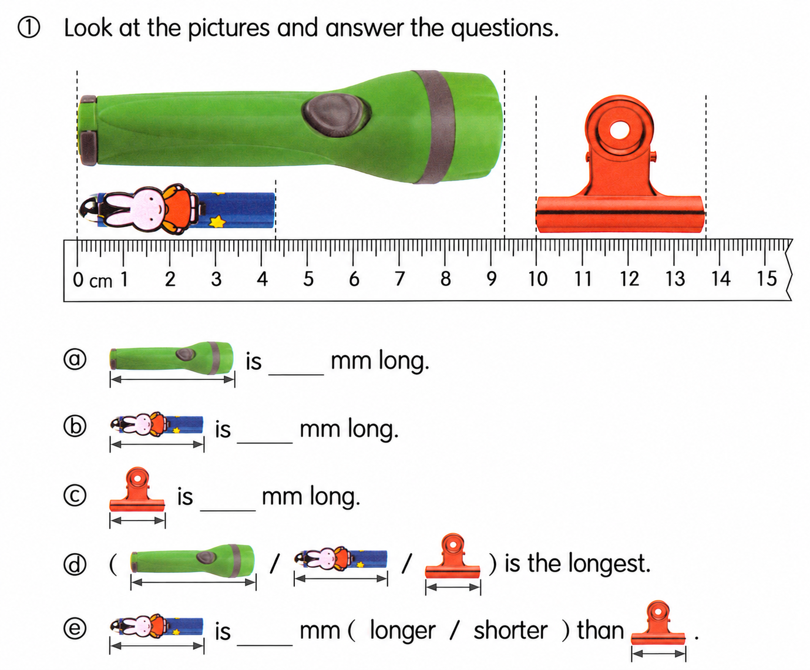
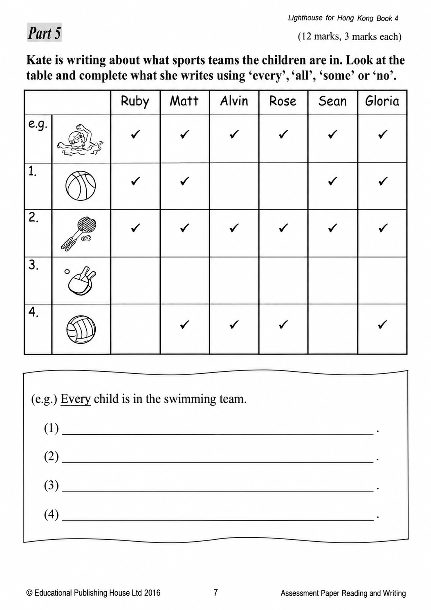
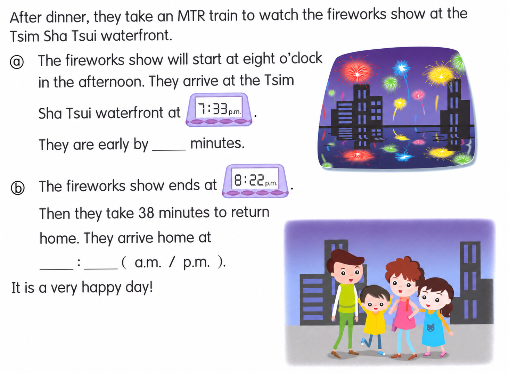
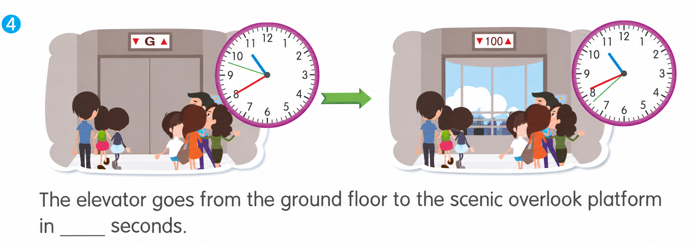

已掌握
| # | 中文意思 | 例句/提示 | 英文默写 | 已掌握 |
|---|---|---|---|---|
| noun 名词 | ||||
| 1 | 健身房 | We exercise in the . | ||
| 2 | 银行 | My mum goes to the . | ||
| 3 | 班长 | The helps the teacher. | ||
| 4 | 分钟 | Please wait a . | ||
| 5 | 小鹿 | A is standing near the trees. | ||
| 6 | 周日 | We visit Grandma on . | ||
| 7 | 周三 | My piano lesson is on . | ||
| verb 动词 | ||||
| 8 | 喂养 | I my fish every day. | ||
| 9 | 抓住 | Try to the ball. | ||
| 10 | 吃饭 | We together every evening. | ||
| adjective 形容词 | ||||
| 11 | 著名的 | This is a place. | ||
| 12 | 柔软的 | The fur is . | ||
| 13 | 不爱干净的 | My brother is and leaves his clothes on the floor. | ||
| 14 | 礼貌的 | It is to say thank you. | ||
| 15 | 美丽的 | The flower is . | ||
| 16 | 正确 | This answer is . | ||
| pronoun 代词 | ||||
| 17 | 它们 | I can see in the garden. | ||
| adjective/interjection 形容词/感叹词 | ||||
| 18 | 欢迎 | to our school. | ||
| uncategorized 未分类 | ||||
| 19 | 收到 | I a letter from my aunt every month. | ||
| 20 | 九月 | School starts in . | ||
| # | 单词/词组 | 中文意思 | 例句/说明 | 已掌握 |
|---|---|---|---|---|
| adjective 形容词 | ||||
| 1 | brave | Gopal is very brave. | ||
| 2 | surprised | My parents were surprised. | ||
| 3 | scared | I was very scared on the first day. | ||
| 4 | gentle | Gopal is gentle and polite. | ||
| noun 名词 | ||||
| 5 | leaflet | This leaflet tells us about the school fair. | ||
| 6 | poem | Read the poem. | ||
| 7 | bus | I go to school by bus. | ||
| 8 | seed | The bird pecks a seed. | ||
| 9 | fin | A fish has a fin. | ||
| 10 | slide | The child goes down the slide. | ||
| 11 | mushroom | A mushroom is a kind of food. | ||
| 12 | moral | The story has a moral. | ||
| 13 | timetable | The timetable shows my classes. | ||
| 14 | lollies | The children bought some lollies. | ||
| 15 | beef | Is there any beef? Yes, there is. | ||
| noun phrase 名词短语 | ||||
| 16 | convenience store | I buy water at the convenience store. | ||
| 17 | Test Week | Test Week is from 16th April to 20th April. | ||
| 18 | a packet of French fries | I'd like a packet of French fries. | ||
| 19 | a carrot | I put a carrot in the soup. | ||
| verb 动词 | ||||
| 20 | refer | The words "he" and "she" refer to people. | ||
| 21 | arrive | I arrive at school on time. | ||
| 22 | locate | We can locate the place on the map. | ||
| 23 | cut | Cut the cheese into thin slices. | ||
| preposition 介词 | ||||
| 24 | opposite | The library is opposite the school. | ||
| adverb/adjective 副词/形容词 | ||||
| 25 | still | Please stand still. | ||
| verb phrase 动词短语 | ||||
| 26 | eat moon cakes | We eat moon cakes at the Mid-Autumn Festival. | ||
| 27 | watch dragon boat races | We watch dragon boat races every year. | ||
| 28 | sing 'Happy Birthday' | We sing 'Happy Birthday' to her. | ||
| uncategorized 未分类 | ||||
| 29 | teenager | My brother is a teenager. He is fifteen. | ||
| 30 | magician | The magician made a coin disappear. | ||
| # | 中文意思 | 例句/提示 | 英文默写 | 已掌握 |
|---|---|---|---|---|
| time/date 时间日期 | ||||
| 1 | 三月 | is the third month. | ||
| 2 | 十月 | is the tenth month. | ||
| 3 | 十一月 | is the eleventh month. | ||
| 4 | 十二月 | is the twelfth month. | ||
| 5 | 星期一 | is a weekday. | ||
| time unit 时间单位 | ||||
| 6 | 周 | A has 7 days. | ||
| 7 | 日 | A has 24 hours. | ||
| numbers 数字 | ||||
| 8 | 6 | is 6. | ||
| 9 | 7 | is 7. | ||
| 10 | 11 | is 11. | ||
| 11 | 12 | is 12. | ||
| 12 | 17 | is 17. | ||
| 13 | 50 | is 50. | ||
| 14 | 80 | is 80. | ||
| plane shape 平面图形 | ||||
| 15 | 六边形 | A has six sides. | ||
| # | 单词/词组 | 中文意思 | 例句/说明 | 已掌握 |
|---|---|---|---|---|
| numbers 数字 | ||||
| 1 | 3-digit number | A 3-digit number has three digits. | ||
| operations 运算 | ||||
| 2 | borrowing | Borrowing helps when we subtract. | ||
| geometry 几何 | ||||
| 3 | obtuse angle | An obtuse angle is greater than 90 degrees and less than 180 degrees. | ||
| 4 | line segment | Draw a line segment. | ||
| question word 题目词 | ||||
| 5 | match | Match the number to the word. | ||
| answer 答案 | ||||
| 6 | answer | Write the answer in the box. | ||
| 7 | result | Check the result after you calculate. | ||
| comparison 比较 | ||||
| 8 | fewest | Which group has the fewest? | ||
| time/date 时间日期 | ||||
| 9 | non-leap year | A non-leap year has 365 days. | ||
| 10 | small division | The minute hand moves one small division in one minute. | ||
| operations calculation 运算 | ||||
| 11 | product | The product is the answer in multiplication. | ||
| 12 | dividend | The dividend is divided by the divisor. | ||
| teacher math vocabulary 老师数学词汇 | ||||
| 13 | each | Each child has three pencils. | ||
| 14 | between ... and ... | 7 is between 6 and 8. | ||
| 15 | finish | Please finish the calculation. | ||
| currency money 货币 | ||||
| 16 | exchange | We exchange money at the counter. | ||
| 17 | pay for | I pay for the book. | ||
| 18 | coin | The coin is round. | ||
| 19 | expensive | This toy costs $50. It is more expensive than the $20 toy. | ||
| measurement 测量 | ||||
| 20 | fill | Fill the jug with water. | ||
| 21 | ruler | Use a ruler to measure the length of the line segment. | ||
| position order 位置和顺序 | ||||
| 22 | following | Answer the following questions. | ||
| data charts 统计图 | ||||
| 23 | block chart | Read the block chart. | ||
| geometry tool 几何工具 | ||||
| 24 | set square | A set square helps us draw angles. | ||
| directions tool 方向工具 | ||||
| 25 | compass | A compass shows directions. | ||
| 句型结构 | ||||
| 26 | Angle ... is the largest. | Angle A is the largest. | ||
| 27 | ... is to the south of ... | The library is to the south of the shop. | ||
| plane shape 平面图形 | ||||
| 28 | leg | A leg of a trapezium is a non-parallel side. | ||
| 29 | isosceles trapezium | An isosceles trapezium has two equal legs. | ||
| 30 | right-angled trapezium | A right-angled trapezium has two right angles. | ||




